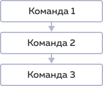
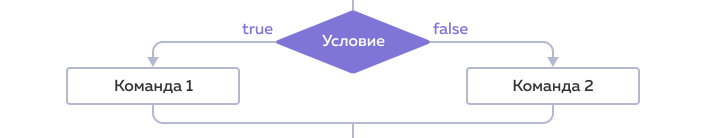
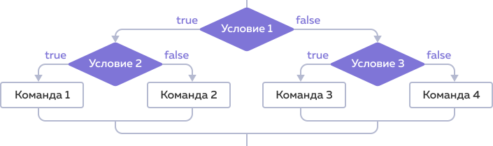

Линейные и нелинейные программы
Линейные программы всегда выполняют одни и те же команды.

Нелинейная программа выполняет разные команды в зависимости от разных условий. Нелинейные программы ещё называют программами с ветвлением, а команды, которые выполняются в зависимости от условий, — ветками.
if и else
Чтобы программа проверяла условия и принимала решения на основе результатов проверок, используют оператор if:
if (условие) {
действия;
}
Здесь «условие» — это выражение, возвращающее true или false, а «действия» внутри фигурных скобок — это команды, которые выполняются, если условие удовлетворено. Удовлетворённым считается условие, которое возвращает true.
Чтобы создать ветку, которая будет срабатывать, если условие не выполнено, используем else:
if (условие) {
действия;
} else {
другие действия;
}
Ветка «действия» срабатывает, если условие выполнено. Ветка «другие действия» срабатывает, если условие не выполнено. Такие конструкции можно читать так: если условие выполняется, сделай действие, иначе сделай другие действия.

Вложенные условия
Что делать, если принятие решения зависит не от одного, а от двух и более условий? Можно использовать один if, а затем, внутри ветки, выполнить ещё одну проверку.
if (условие1) {
if (условие2) {
действия;
}
}
Затем внутри вложенного условия можно добавить ещё одно и так до бесконечности.

Вложенные условия могут сделать код сложным и запутанным. Если вложенность большая, то понять, почему выполняется то или иное действие, становится трудно.
Операторы сравнения
Для сравнения значений используют операторы «больше» >, «меньше» <, «больше или равно» >= и «меньше или равно» <=.
console.log(1 > 1); // Выведет: false
console.log(1 < 1); // Выведет: false
console.log(1 >= 1); // Выведет: true
console.log(1 <= 1); // Выведет: true
Операторы сравнения работают не только с числами, но и с другими типами данных.
Для сравнения строк JavaScript использует таблицу кодирования Unicode. Порядок символов в ней совпадает с порядком букв в алфавите. Чем больше порядковый номер символа в таблице, тем больше символ. Обратите внимание, строчные буквы в таблице Unicode идут после заглавных, поэтому они считаются «больше»:
console.log('Б' > 'А'); // Выведет: true
console.log('а' > 'А'); // Выведет: true
Строки JavaScript сравнивает посимвольно. Если первый символ в первой строке больше первого символа во второй строке, то считается, что первая строка больше. Если первые символы совпадают, то сравниваются вторые символы и так далее. Если все символы совпадают, но одна из строк длиннее, то она и считается большей. Например:
console.log('Кот' > 'Код'); // Выведет: true
console.log('JavaScript' > 'Java'); // Выведет: true
Если сравниваются данные разных типов, то они приводятся к числу. При этом false становится нулём, а true — единицей.
console.log(2 > '1'); // Выведет: true
console.log(false <= 0); // Выведет: true
console.log(true >= 1); // Выведет: true
Равенство и неравенство
В JavaScript можно также проверить значения на равенство и неравенство. При этом используют операторы ==, ===, != и !==.
== Нестрогое равенство (с приведением типов) - Сравнивает два значения, перед этим приводит одно из значений к типу другого. Если значения равны, возвращает true.=== Строгое равенство (без приведения типов) - Сравнивает два значения. Если типы значений разные или значения не равны, возвращает false.!= Неравенство (с приведением типов) - Сравнивает два значения, перед этим приводит одно из значений к типу другого. Если значения не равны, возвращает true.!== Строгое неравенство (без приведения типов) - Сравнивает два значения. Если типы значений разные или значения не равны, возвращает true.
String и Number
Можно привести числовое значение к строковому типу. Один из способов — использовать команду String:
String(число);
Чтобы превратить строку в число, используют команду Number:
Number(строка);
Приведение к логическому типу
В условии все значения приводятся к логическому типу. Поэтому мы можем использовать в качестве условий любые значения: числа, строки, true и false, а также переменные, которые содержат такие данные.
Все числа, кроме нуля, — true, при этом 0 — false. Все строки, кроме пустой строки, — true, пустая строка '' — false. Можно сказать, что значения, которые как бы ничего в себе не содержат (как 0 или пустая строка ''), приводятся к false, а все остальные приводятся к true.
if ('какая-то строка') {
// Непустая строка приводится к true
// Условие выполнится
};
if ('') {
// Пустая строка приводится к false
// Условие не выполнится
};
if (123) {
// Число приводится к true
// Условие выполнится
};
if (0) {
// 0 приводится к false
// Условие не выполнится
};
Логические операторы
Отрицание
Чтобы создать проверки с отрицанием, используют унарный (с одним операндом) логический оператор !:
let condition = false;
if (!condition) {
// код выполнится
}
И и ИЛИ
Можно комбинировать условия внутри if с помощью логических операторов: «логического И», &&, и «логического ИЛИ», ||.
Оператор «Логическое И», возвращает true только в том случае, если оба условия, слева и справа от него, возвращают true.
true && true; // Результат: true
true && false; // Результат: false
false && true; // Результат: false
false && false; // Результат: false
Оператор «логическое ИЛИ», возвращает true если любое из условий слева или справа от него, возвращают true.
true || true; // Результат: true
true || false; // Результат: true
false || true; // Результат: true
false || false; // Результат: false
Например:
let conditionOne = true;
let conditionTwo = true;
let conditionThree = false;
let conditionFour = true;
if (conditionOne && conditionTwo) {
// код выполнится
}
if (conditionThree || conditionFour) {
// код тоже выполнится
}
Логические операторы можно комбинировать:
let conditionOne = true;
let conditionTwo = true;
let conditionThree = false;
if (conditionOne && conditionTwo && !conditionThree) {
// код выполнится
}